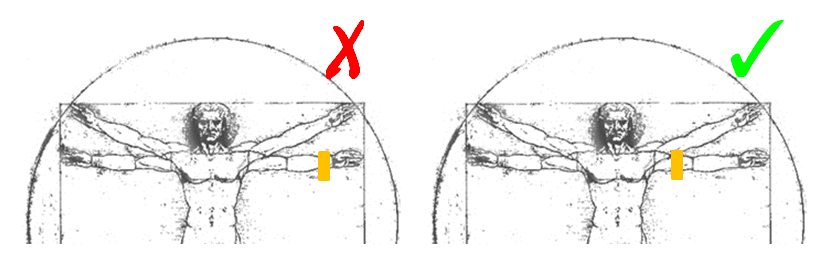
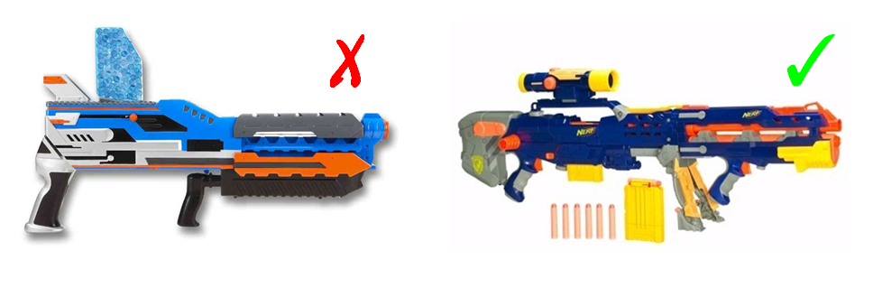

Basic Gameplay
RULE ONE: KNOW THE RULES
You are going to be one of three player types, and gameplay is different for each: Humans, Zombies, and Original Zombies (OZs). Basically, you are trying to help your team win by fighting the other team(s) in a glorified game of tag.
WEAR THE GIVEN BANDANA AT ALL TIMES. Wear it as befits your player type (see below). The ONLY exceptions to this are if you are working – while you are on the clock you do not have to play - or if you are at an athletic practice. If you choose to play while working, wear your bandana. If you don't wear your bandana at any other times you're cheating and being a douchebag and breaking the game and I hope you get gum stuck in your hair. If you lose your bandana see a Moderator, they can get you a new one.
Try to avoid using bikes, cars, skates, skateboards, etc. during the duration of the game. If you live off campus, you may certainly use one of these methods of transportation to get to campus, but once you reach campus please do not use them.
Report your kills as soon as possible on HvZSource.
You may ask the Mods questions at any time, but Mods reserve the right not to answer if they feel the information would give you an unfair advantage.
Communicate with other players at your own risk.
Do not use your weapons on non-players or pretend to do so. We don't want to get in any trouble over this game.
Never play inside. Don't do it. Dorms, dining halls, class buildings, houses, stores, anywhere. Don't.
If you have a dispute try to find a safe place to go and settle it using these rules, and ask a Mod if you can't settle it on your own. Because Mods can really only help as far as clarifying rules, flipping a coin or dueling are probably your best options in many cases.
Gameplay - Humans
Objective: survive to the end of the playing period and win the final mission.
BANDANA: around right or left upper arm. Not your wrist. Not over your shoulder. Don't roll it up really thin and don't try to camouflage it with what you're wearing. Always wear it over your top layer of clothing.
If you see a zombie, you can stun them for 15 minutes (or a different length of time, depending) by hitting them with a sock or a foam dart according to the rules in the Equipment section. If stunned zombies start following you around, no problem! You can keep re-stunning them to reset their timers as many times as you want.
NO INTENTIONAL HEAD, NECK, OR GROIN SHOTS. Allow target time to recover if necessary.
Allow target time to recover if necessary.
Seriously, don't hurt anyone.
HAVE YOUR CODE WITH YOU AT ALL TIMES.
If an unstunned zombie touches you, your backpack, your gun, etc, then you're infected. Take your armband off and put it around your neck - you're "stunned" for one transitional hour unless told otherwise. Give your code to the zombie who tagged you.
Be honest about getting tagged. There's no prize for winning so it's not worth making people think you're a jerk.
Check in once you get to a mission. Attendance is recommended for all missions, so you can help your team win because you are the star it's you, but being able to play in (and therefore win) the final mission depends on attending one of the previous missions for humans. This is to prevent you from hiding in your apartment all week because that's not really playing and you should feel bad.
Gameplay - Zombies
Objective: turn all humans to zombies
BANDANA: around head, across forehead. Not in your hair like a ribbon. Not under your hair like a headband. Don't roll it up really thin. If you put your hood up for some reason, the bandana has to be moved to the outside of that. Top layer, always.
No weapons but yourself. Zombies may not carry guns or socks. A firm touch to a human or anything the human is wearing or holding (including their weapon) is a tag, and the human is then a zombie.
No shields.
If you are hit with a dart or a sock, try to get out of the way, then pull your headband down around your neck. Stun timers are usually 15 minutes, but they may be different because of missions. When your stun timer is up, put your headband back up across your forehead and continue eating brainz.
Every time you get hit with a dart or sock, your stun timer starts over again, so think twice about blatantly following someone across campus. Think stealthy.
NO INTENTIONAL HEAD, NECK, OR GROIN SHOTS. Allow target time to recover if necessary.
Allow target time to recover if necessary.
Seriously, don't hurt anyone.
Be honest about getting stunned and about when your stun timer is up. There's no prize for winning so it's not worth making people think you're a jerk.
Attendance is recommended for all missions, so you can help your team win because you are the star it's you.
Gameplay - Original Zombies (OZs)
Objective: turn all humans to zombies
OZs are only different from zombies during the first day of the game, until the final mission. During this period, OZs disguise themselves by wearing their bandanas like humans do and may carry guns or socks.
While diguised, OZS ARE STUNNED IN THE SAME WAY AS NORMAL ZOMBIES but do not need to show it. That means humans should probably just shoot everything with a bandana during the first day or so of play.
See the home page for information about becoming an OZ.
Equipment
Zombies get nothing. You lose. Good day sir.
Humans (and disguised zombies) may use sock balls made only of socks or Nerf / Nerf-type guns that shoot darts. To make things easier on everyone, we don't allow the guns that shoot discs or anything. We especially don't allow the guns that shoot pellets, even the harmless water ones, due to an incident a few years back.
If you have a concern that someone else's equipment isn't kosher, tell a Mod. Mods reserve the right to test your equipment on you.
Questions? Contact ndhvz@fake.com